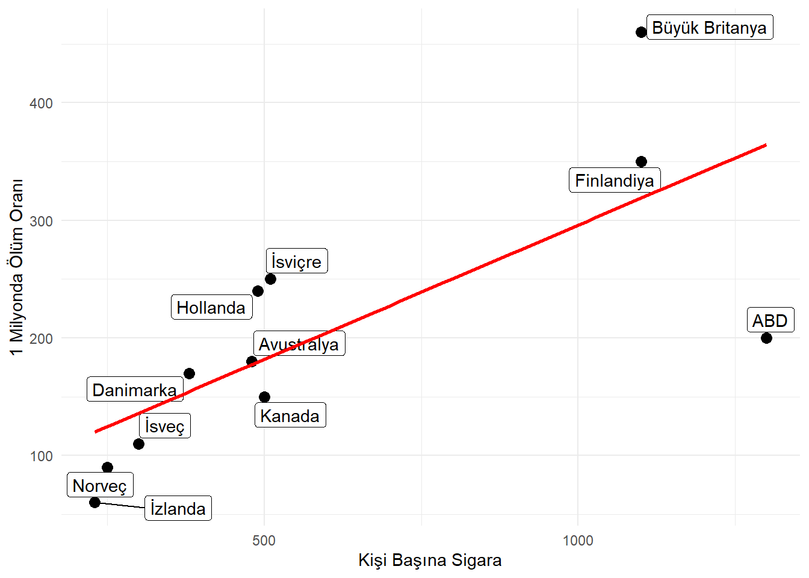
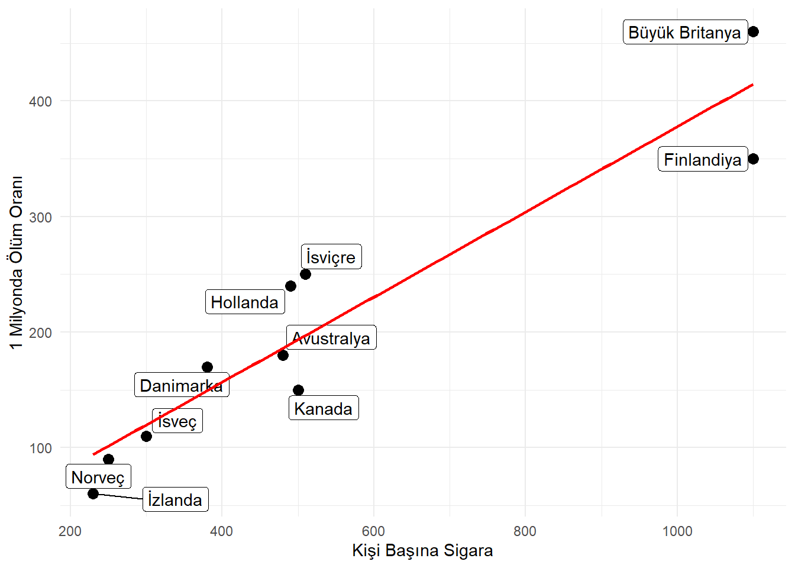
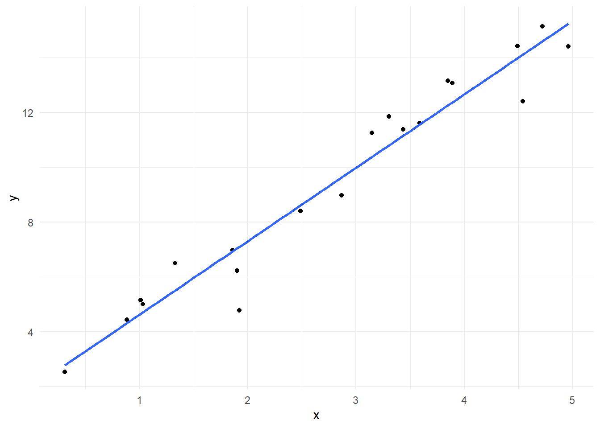
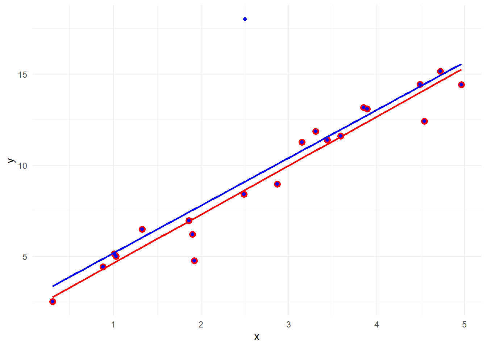
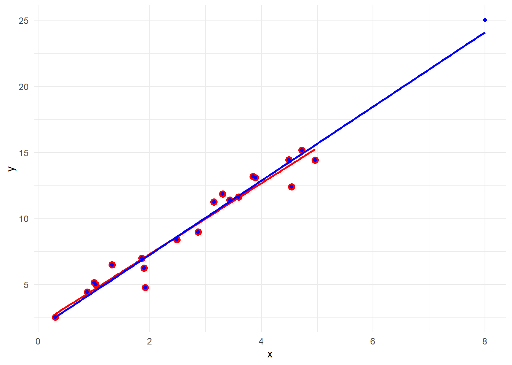
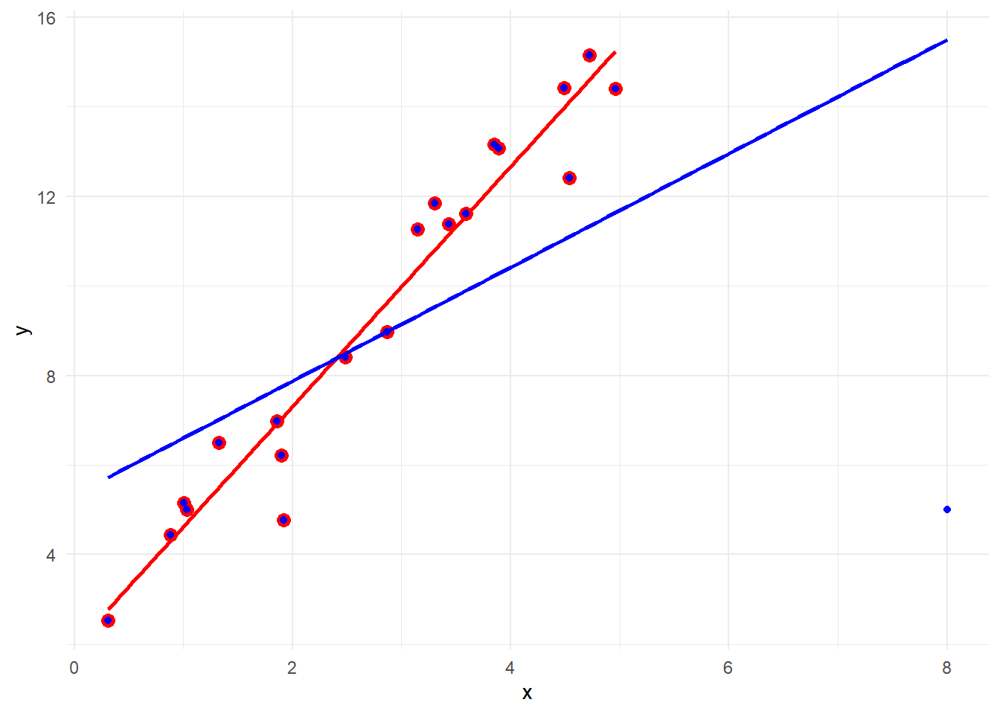

Konu 11 Model Tanımlama Hataları
Uygulamalı ekonometri gözü kapalı yapılamaz; anlama, sezgi, ustalık gerektirir. -Cuthbertson, Hall, Taylor
Modelin doğru tanımlanması klasik doğrusal regresyon modeli varsayımlarından biridir.
library(readxl);library(tidyverse);library(magrittr);library(lmtest);library(psych);library(moments)
df <- read_excel("C:/Users/datanerd/Desktop/Github/rEkonometri/data/Table1_1.xls")
df %<>%
dplyr::select(wage, female, nonwhite, union, education, exper, age)11.1 Eksik Tanımlanmış Modeller
Eksik tanımlı model olursa ne olur?
Tahmin edilen parametreler yanlıdır ve tutarlı değildir. Bu, dışarıda bırakılan değişkenlerle modeldeki değişkenlerin korelasyonlu olması durumunda geçerlidir.
Herhangi bir korelasyon olmasa bile modelin kesme terimi yanlıdır.
Hata varyansı yanlış tahmin edilir.
Parametre tahminlerine ait varyanslar yanlıdır. Bunun sonucu olarak standart hatalar da yanlıdır.
Her zamanki güven aralıkları ve hipotez testi yöntemlerinin güvenilirliği azalır ve bu da istatistiksel anlamlılık hakkında yanıltıcı bilgilere yol açar.
Öngörü ve öngörü güven aralıkları sağlıklı olmaz.
Gujarati, doğru tanımlanmış modeli bulmaya çalışmak kutsal kaseyi bulmaya çalışmak gibidir der. En iyi yolun ise dikkate alınacak alternatif bir modelle karşılaştırmak olacağını savunur.
df1 <- df
model <- lm(formula = wage ~ female + nonwhite + union + education + exper, data = df1)
summary(model)##
## Call:
## lm(formula = wage ~ female + nonwhite + union + education + exper,
## data = df1)
##
## Residuals:
## Min 1Q Median 3Q Max
## -20.781 -3.760 -1.044 2.418 50.414
##
## Coefficients:
## Estimate Std. Error t value Pr(>|t|)
## (Intercept) -7.18334 1.01579 -7.072 2.51e-12 ***
## female -3.07488 0.36462 -8.433 < 2e-16 ***
## nonwhite -1.56531 0.50919 -3.074 0.00216 **
## union 1.09598 0.50608 2.166 0.03052 *
## education 1.37030 0.06590 20.792 < 2e-16 ***
## exper 0.16661 0.01605 10.382 < 2e-16 ***
## ---
## Signif. codes: 0 '***' 0.001 '**' 0.01 '*' 0.05 '.' 0.1 ' ' 1
##
## Residual standard error: 6.508 on 1283 degrees of freedom
## Multiple R-squared: 0.3233, Adjusted R-squared: 0.3207
## F-statistic: 122.6 on 5 and 1283 DF, p-value: < 2.2e-16wage’in belirleyicileri olarak female, nonwhite, union, education ve exper değişkenlerini kattık.
Şunu biliyoruz: İş deneyimi arttıkça ücretler de artacaktır. Ama şunu bilmiyoruz: İş deneyimi arttıkça ücretler daha yavaş bir oranda mı artar yoksa daha hızlı bir oranda mı? Bunun için iş deneyimini temsil eden exper değişkeninin karesini modele ekleyeceğiz.
df1 %<>%
mutate(exper2 = exper^2)
model <- lm(formula = wage ~ female + nonwhite + union + education + exper + exper2, data = df1)
summary(model)##
## Call:
## lm(formula = wage ~ female + nonwhite + union + education + exper +
## exper2, data = df1)
##
## Residuals:
## Min 1Q Median 3Q Max
## -19.883 -3.751 -0.855 2.455 50.125
##
## Coefficients:
## Estimate Std. Error t value Pr(>|t|)
## (Intercept) -8.419035 1.035710 -8.129 1.01e-15 ***
## female -3.009360 0.361432 -8.326 < 2e-16 ***
## nonwhite -1.536077 0.504448 -3.045 0.00237 **
## union 1.026979 0.501521 2.048 0.04079 *
## education 1.323745 0.065937 20.076 < 2e-16 ***
## exper 0.424463 0.053580 7.922 5.03e-15 ***
## exper2 -0.006183 0.001227 -5.039 5.34e-07 ***
## ---
## Signif. codes: 0 '***' 0.001 '**' 0.01 '*' 0.05 '.' 0.1 ' ' 1
##
## Residual standard error: 6.447 on 1282 degrees of freedom
## Multiple R-squared: 0.3365, Adjusted R-squared: 0.3334
## F-statistic: 108.4 on 6 and 1282 DF, p-value: < 2.2e-16Yeni eklediğimiz \(exper^2\) değişkeninin istatistiksel olarak oldukça anlamlı (düşük p değeri) olduğunu görüyoruz. Fakat parametre işaretinin negatif olduğuna dikkat edelim. exper değişkeni pozitif idi. Bu da iş deneyimine bağlı olarak ücretlerin artış gösterdiğini ama azalan oranda bir artış olduğunu göstermektedir.
Aslında \(exper^2\) değişkenini modelden dışlayarak bu değişkenin (belki de değişkenlerin) modelden dışlanması yanlılığına düştük. Şimdi bir de modele cinsiyet ve deneyim arasındaki etkileşimi dahil edelim.
df1 %<>%
mutate(female_exper = female * exper)
model <- lm(formula = wage ~ female + nonwhite + union + education + exper + exper2 + female_exper, data = df1)
summary(model)##
## Call:
## lm(formula = wage ~ female + nonwhite + union + education + exper +
## exper2 + female_exper, data = df1)
##
## Residuals:
## Min 1Q Median 3Q Max
## -20.586 -3.644 -0.823 2.365 49.870
##
## Coefficients:
## Estimate Std. Error t value Pr(>|t|)
## (Intercept) -9.200668 1.072115 -8.582 < 2e-16 ***
## female -1.433980 0.680797 -2.106 0.03537 *
## nonwhite -1.481891 0.503577 -2.943 0.00331 **
## union 0.949027 0.501081 1.894 0.05846 .
## education 1.318365 0.065801 20.036 < 2e-16 ***
## exper 0.471974 0.056212 8.396 < 2e-16 ***
## exper2 -0.006274 0.001224 -5.125 3.44e-07 ***
## female_exper -0.084151 0.030848 -2.728 0.00646 **
## ---
## Signif. codes: 0 '***' 0.001 '**' 0.01 '*' 0.05 '.' 0.1 ' ' 1
##
## Residual standard error: 6.431 on 1281 degrees of freedom
## Multiple R-squared: 0.3403, Adjusted R-squared: 0.3367
## F-statistic: 94.41 on 7 and 1281 DF, p-value: < 2.2e-16Eklediğimiz female_exper değişkeninin tıpkı \(exper^2\) değişkeninde olduğu gibi istatistiksel olarak anlamlı olduğunu görüyoruz. Bu yeni değişkenin parametresi negatiftir. Bu da kadınların benzer iş deneyimi olan erkek meslektaşlarına göre daha az kazandığını belirtmektedir.
Peki, orijinal modeli genişletmeye değer mi? Öyle olduğu görülüyor ama bunu F ile de test edebiliriz.
İlk model kısıtlanmış; genişlettiğimiz model ise kısıtlanmamış model olsun.
\(F = \frac{(R^2_{ur} - R^2_r) / m}{(1 - R^2_{ur}) / (n - k)}\)
Burada, \(R^2_{r}\) kısıtlanmış; \(R^2_{ur}\) kısıtlanmamış \(R^2\)’yi temsil etmektedir. Ayrıca m kısıtlama sayısı (kısıtlanmış model 2 değişkeni dışarıda bıraktı), n gözlem sayısı (1289) ve k kısıtlanmamış modeldeki bağımsız değişken sayısıdır (2 tane de sonradan ekledik ve 8 oldu).
## [1] 0.3403154## [1] 0.3233388\(F = \frac{((0.3403154 – 0.3233388) / 2)}{((1 – 0.3403154) / (1289 – 8))} = 16.4829\)
F değeri m = 2 pay ve n - k = 1281 payda serbestlik derecesi için oldukça anlamlıdır. Bu da belirlediğimiz iki değişkenin orijinal modele eklenmesini desteklemektedir. Evet, \(R^2\)’lerde önemli bir değişiklik olmadı ama F testi bize bunun önemli olduğunu gösterdi. Biz burada değişkenlerin dışlanması ile orijinal modeldeki parametrelerin yanlı olabileceğini gördük çünkü ilgili değişkenleri ekleyince parametreler de önemli ölçüde değişti. Şunu da bilelim: Örneklem büyüklüğü arttıkça yanlılığın ortadan kalkacağına dair bir garanti yoktur.
Dışlanan değişkenlerle ilgili iki test göreceğiz: Ramsey Reset ve Lagrange Çarpan (LM).
Ramsey Reset:
İlk olarak kurduğumuz modelden tahmin değerlerini elde ederiz. Bu tahmin değerlerinin ikinci, üçüncü ve belki daha yüksek kuvvetlerini bağımsız değişken olarak modele ilave ederek yeniden bir tahminleme yaparız. Ardından F testi ile kısıtlanmış-kısıtlanmamış model yaparız. Eğer F testi istatistiksel olarak anlamlı ise \(H_0\)’ı reddedip kısıtlanmış modelin uygun olmadığını söyleriz.
Önce modeli kuralım. Ardından test edelim.
df1$tahmin <- lm(formula = wage ~ female + nonwhite + union + education + exper, data = df1)$fitted.values
df1$tahmin2 <- df1$tahmin^2
df1$tahmin3 <- df1$tahmin^3
model <- lm(formula = wage ~ female + nonwhite + union + education + exper + tahmin2 + tahmin3, data = df1)
summary(model)##
## Call:
## lm(formula = wage ~ female + nonwhite + union + education + exper +
## tahmin2 + tahmin3, data = df1)
##
## Residuals:
## Min 1Q Median 3Q Max
## -25.769 -3.483 -0.997 2.324 50.870
##
## Coefficients:
## Estimate Std. Error t value Pr(>|t|)
## (Intercept) 4.4129809 2.4536171 1.799 0.0723 .
## female -0.0590166 0.7975349 -0.074 0.9410
## nonwhite -0.1954657 0.6316463 -0.309 0.7570
## union 0.1241080 0.5641605 0.220 0.8259
## education 0.0801244 0.3023952 0.265 0.7911
## exper 0.0009687 0.0424703 0.023 0.9818
## tahmin2 0.0447380 0.0207669 2.154 0.0314 *
## tahmin3 -0.0003106 0.0006007 -0.517 0.6052
## ---
## Signif. codes: 0 '***' 0.001 '**' 0.01 '*' 0.05 '.' 0.1 ' ' 1
##
## Residual standard error: 6.413 on 1281 degrees of freedom
## Multiple R-squared: 0.344, Adjusted R-squared: 0.3404
## F-statistic: 95.94 on 7 and 1281 DF, p-value: < 2.2e-16##
## RESET test
##
## data: lm(formula = wage ~ female + nonwhite + union + education + exper, data = df1)
## RESET = 20.124, df1 = 2, df2 = 1281, p-value = 2.483e-09F değeri istatistiksel olarak oldukça anlamlıdır (neredeyse sıfır bir p değerine sahip). Bu da \(H_0\)’ın reddi olup model tanımlama hatasına kanıttır.
Ramsey Reset testi bu kanıtı bulsa da alternatif bir yol önermez. Ayrıca modele eklenecek tahmin değerlerinin kuvvetlerinin sayısı hakkında da bilgi vermez.
Şimdi bir de Lagrange Çarpan ya da LM testine bakalım. Bu test için öncelikle orijinal modelden elde edilen kalıntıları buluruz. Eğer model doğruysa kalıntılarla modelden dışlanan değişkenler arasında ilişki olmamalıdır. Ardından kalıntıların orijinal modeldeki ve dışlanan değişkenlere göre regresyonunu alırız. Hesaplanan \(\chi^2\) değeri kritik \(\chi^2\) değerini belirlenen anlamlılık düzeyinde geçerse (p değeri yeterince küçükse) orijinal regresyonu reddederiz. Yani, orijinal model yanlış tanımlanmıştır.
Önce modeli kuralım. Ardından test edelim.
df1$`kalıntılar` <- lm(formula = wage ~ female + nonwhite + union + education + exper, data = df1)$residuals
model <- lm(formula = `kalıntılar` ~ female + nonwhite + union + education + exper + exper2 + female_exper, data = df1)
summary(model)##
## Call:
## lm(formula = kalıntılar ~ female + nonwhite + union + education +
## exper + exper2 + female_exper, data = df1)
##
## Residuals:
## Min 1Q Median 3Q Max
## -20.586 -3.644 -0.823 2.365 49.870
##
## Coefficients:
## Estimate Std. Error t value Pr(>|t|)
## (Intercept) -2.017330 1.072115 -1.882 0.06011 .
## female 1.640895 0.680797 2.410 0.01608 *
## nonwhite 0.083422 0.503577 0.166 0.86845
## union -0.146949 0.501081 -0.293 0.76937
## education -0.051936 0.065801 -0.789 0.43009
## exper 0.305367 0.056212 5.432 6.65e-08 ***
## exper2 -0.006274 0.001224 -5.125 3.44e-07 ***
## female_exper -0.084151 0.030848 -2.728 0.00646 **
## ---
## Signif. codes: 0 '***' 0.001 '**' 0.01 '*' 0.05 '.' 0.1 ' ' 1
##
## Residual standard error: 6.431 on 1281 degrees of freedom
## Multiple R-squared: 0.02509, Adjusted R-squared: 0.01976
## F-statistic: 4.709 on 7 and 1281 DF, p-value: 3.126e-05Gözlem sayısı * \(R^2\) değeri = 1289 * 0.02509 = 32.34101 olup 2 serbestlik derecesi için bu değeri veya daha büyüğünü elde etme olasılığı son derece düşüktür. Bu da Ramsey Reset testini destekleyen bir Lagrange Çarpan testi sonucudur. Yani, orijinal model yanlış belirlenmiştir.
11.2 Aşırı Tanımlanmış Modeller
\(R^2\) yükseldikçe modelin daha iyi olacağına inanılır. Bunun için de modele değişkenler eklenir. Bu da bir modeli aşırı tanımlama sorununa götürebilir.
Aşırı tanımlı model olursa ne olur?
Aşırı tanımlanmış modelin bütün Sıradan En Küçük Kareler tahmincileri yansızdır ve tutarlıdır.
Hata terimi varyansı doğru tahmin edilir.
Güven aralığı ve hipotez testleri güvenilirdir.
Ancak böyle bir modelin parametre tahminleri genelde etkin değildir. Yani, varyanslar gerçek modelinkilerden daha yüksektir.
Aşırı tanımlı modelde şunu bilmek gerekiyor: Hem tahmincilerde etkinlik kaybı söz konusu olacak hem de çoklu doğrusal bağlantı sorununu doğurabilir.
Bunu anlatabilmek için aynı örnek üzerinden gidelim. Veri setini tekrar alalım ve bu defa age değişkenini de ekleyelim.
df2 <- df
model <- lm(formula = wage ~ female + nonwhite + union + education + exper + age, data = df2)
summary(model)##
## Call:
## lm(formula = wage ~ female + nonwhite + union + education + exper +
## age, data = df2)
##
## Residuals:
## Min 1Q Median 3Q Max
## -20.781 -3.760 -1.044 2.418 50.414
##
## Coefficients: (1 not defined because of singularities)
## Estimate Std. Error t value Pr(>|t|)
## (Intercept) -7.18334 1.01579 -7.072 2.51e-12 ***
## female -3.07488 0.36462 -8.433 < 2e-16 ***
## nonwhite -1.56531 0.50919 -3.074 0.00216 **
## union 1.09598 0.50608 2.166 0.03052 *
## education 1.37030 0.06590 20.792 < 2e-16 ***
## exper 0.16661 0.01605 10.382 < 2e-16 ***
## age NA NA NA NA
## ---
## Signif. codes: 0 '***' 0.001 '**' 0.01 '*' 0.05 '.' 0.1 ' ' 1
##
## Residual standard error: 6.508 on 1283 degrees of freedom
## Multiple R-squared: 0.3233, Adjusted R-squared: 0.3207
## F-statistic: 122.6 on 5 and 1283 DF, p-value: < 2.2e-16age ve exper arasındaki tama yakın doğrusal bağlantı nedeniyle regresyonu çalıştıramadık. Hatırlayın, exper değişkeni = yaş – eğitim süresi – 6 okula başlama yaşı olarak tanımlanmıştı. age ve exper değişkenleri arasındaki korelasyon:
## [1] 0.970575age veya exper değişkenini modele ekleyebilir ama her ikisini birden tama yakın doğrusal bağlantı nedeniyle modele ekleyemeyiz.
11.3 Yanlış Fonksiyon Yapısı
Saatlik ücretler ile ilgili iki tane regresyon modeli kurmuştuk: Doğrusal ve Log-Doğrusal.
df3 <- df %>%
dplyr::select(wage, female, nonwhite, union, education, exper) %>%
mutate(exper2 = exper^2,
female_exper = female * exper,
lnwage = log(wage))Doğrusal model:
##
## Call:
## lm(formula = wage ~ ., data = df3[, -9])
##
## Residuals:
## Min 1Q Median 3Q Max
## -20.586 -3.644 -0.823 2.365 49.870
##
## Coefficients:
## Estimate Std. Error t value Pr(>|t|)
## (Intercept) -9.200668 1.072115 -8.582 < 2e-16 ***
## female -1.433980 0.680797 -2.106 0.03537 *
## nonwhite -1.481891 0.503577 -2.943 0.00331 **
## union 0.949027 0.501081 1.894 0.05846 .
## education 1.318365 0.065801 20.036 < 2e-16 ***
## exper 0.471974 0.056212 8.396 < 2e-16 ***
## exper2 -0.006274 0.001224 -5.125 3.44e-07 ***
## female_exper -0.084151 0.030848 -2.728 0.00646 **
## ---
## Signif. codes: 0 '***' 0.001 '**' 0.01 '*' 0.05 '.' 0.1 ' ' 1
##
## Residual standard error: 6.431 on 1281 degrees of freedom
## Multiple R-squared: 0.3403, Adjusted R-squared: 0.3367
## F-statistic: 94.41 on 7 and 1281 DF, p-value: < 2.2e-16Log-Doğrusal model:
##
## Call:
## lm(formula = lnwage ~ ., data = df3[, -1])
##
## Residuals:
## Min 1Q Median 3Q Max
## -2.35597 -0.26963 0.01568 0.29182 1.87681
##
## Coefficients:
## Estimate Std. Error t value Pr(>|t|)
## (Intercept) 7.324e-01 7.761e-02 9.437 < 2e-16 ***
## female -1.481e-01 4.928e-02 -3.004 0.002715 **
## nonwhite -1.273e-01 3.646e-02 -3.492 0.000496 ***
## union 1.685e-01 3.627e-02 4.645 3.76e-06 ***
## education 9.479e-02 4.764e-03 19.900 < 2e-16 ***
## exper 4.195e-02 4.069e-03 10.308 < 2e-16 ***
## exper2 -6.370e-04 8.863e-05 -7.187 1.12e-12 ***
## female_exper -5.043e-03 2.233e-03 -2.258 0.024109 *
## ---
## Signif. codes: 0 '***' 0.001 '**' 0.01 '*' 0.05 '.' 0.1 ' ' 1
##
## Residual standard error: 0.4656 on 1281 degrees of freedom
## Multiple R-squared: 0.373, Adjusted R-squared: 0.3696
## F-statistic: 108.9 on 7 and 1281 DF, p-value: < 2.2e-16İki model de çok cazip duruyor. Biz bunlardan hangisini seçmeliyiz?
\(R^2\)’lerini karşılaştırabilir miyiz?
Hayır cevabını daha önce vermiştik. \(R^2\) doğrusal modelde bağımlı değişkendeki değişkenliğin bütün bağımsız değişkenlerce açıklanan oranını ölçerken, yarı-logaritmik modelde bağımlı değişkenin logaritmasındaki değişkenliğin oranını ölçer. Bu ikisi aynı şey değildir.
Şu adımları izleyelim.
- Bağımlı değişken wage’lerin geometrik ortalamasını alalım.
## [1] 10.40634## [1] 10.40634- wage’leri bu geometrik ortalamaya bölelim.
- Artık bağımlı değişken wage yerine geometrik ortalamaya bölünmüş wage’i kullanarak modeli yeniden oluşturalım.
Buradan kalıntı kareler toplamını elde edelim. Yani, kalıntıların karelerini alıp toplayacağız.
## [1] 489.2251- Bağımlı değişken lnwage yerine geometrik ortalamaya bölünmüş wage’in logaritmasını kullanıp model kuralım ve yine yukarıda olduğu gibi kalıntı kareler toplamını elde edelim.
df3$go_lnwage <- log(df3$go_wage)
yenimodel2 <- lm(formula = go_lnwage ~., data = df3[,-c(1,9,10)]) #1., 9. ve 10. sütunları alma
sum((yenimodel2$residuals)^2)## [1] 277.6474- Kalıntı kareler toplamı olan RSS’ler bulunduktan sonra aşağıdaki değeri hesaplayalım.
\(λ = \frac{n}{2} * ln(\frac{RSS_1}{RSS_2})\sim\chi^2_1\)
n gözlem sayısıdır.
Büyük olan RSS değeri paya koyulur.
## [1] 365.09041 serbestlik derecesi için bu \(\chi^2\) değeri oldukça yüksektir. Bu da istatistiksel olarak anlamlı olup küçük RSS’e sahip modelin daha iyi olduğu sonucunu destekler. Yani, ilk başta kurduğumuz modelin fonksiyon kalıbı yanlış seçilmiştir. Artık log-doğrusal modeli kullanacağız. Log-Doğrusal modelin daha üstün olduğunu istatistiksel olarak göstermiş olduk.
11.4 Ölçüm Hataları
Verileri derlerken çok dikkatli ve bazı aşikar hataların giderildiğinden emin olunmalıdır. Eğer bu hatalar bağımlı değişkenlere aitse Sıradan En Küçük Kareler tahmini üzerinde çok ciddi etkileri olmaz. Yani, Sıradan En Küçük Kareler tahmincileri, varyansları ve standart hataları yansızdır ama tahmin edilen varyanslar ve dolayısıyla standart hatalar ölçüm hatalarının olmamasına göre daha büyüktür. Eğer ölçüm hataları bağımsız değişkenlere aitse Sıradan En Küçük Kareler tahmincileri hem yanlı olma hem tutarlı olmama gibi durumlara girer. Hatta tek bir bağımsız değişken diğer bağımsız değişkenlerin yanlı olmasına ve tutarlı olmamasına yol açar.
Hükümetler istatistik biriktirmeye son derece meraklıdır. Onları toplarlar, eklerler, n. kuvvete yükseltirler, küp kökünü alırlar ve harika diagramlar oluştururlar. Ancak hiçbir zaman unutmamamız gereken bir gerçek bu rakamların her birinin başlangıçta ne bildirdiğini pek de umursamayan köy bekçisi (village watchman) tarafından oluşturulduğudur. -Stamp
11.5 Aykırı Değer, Yüksek Kaldıraç Etkisi, Baskın Nokta ve Simüle Edilmiş Veriler
Regresyon analizi bazında kalıntısı diğer gözlemlerin kalıntılarından büyük olan gözleme aykırı değer denir. Tabi birden fazla olabilir. İşaretleri ortadan kaldırmak için kalıntılara kareleri alınarak da bakılabilir.
Eğer bir gözlem örneklemdeki gözlem yığınlarından aşırı derecede uzaktaysa yüksek kaldıraç etkisi ortaya koyabilir. Bu tür gözlemler regresyon doğrusunu kendine doğru çekebilir ve doğrunun eğiminde değişimlere yol açabilir.
Eğer gözlem, kaldıraç etkisiyle regresyon doğrusunu kendine çekerse buna baskın nokta adı verilir.
ulke <- c("ABD", "Avustralya", "Büyük Britanya", "Danimarka", "Finlandiya", "Hollanda", "İsveç", "İsviçre", "İzlanda", "Kanada", "Norveç")
kisibasinasigara <- c(1300, 480, 1100, 380, 1100, 490, 300, 510, 230, 500, 250)
milyondaolumoranlari <- c(200, 180, 460, 170, 350, 240, 110, 250, 60, 150, 90)
df4 <- data.frame(ulke = ulke, kisibasinasigara = kisibasinasigara, milyondaolumoranlari = milyondaolumoranlari)
df4 %>%
ggplot(aes(x = kisibasinasigara, y = milyondaolumoranlari)) +
geom_point(size = 3) +
ggrepel::geom_label_repel(aes(label = ulke)) +
geom_smooth(method = "lm", se = FALSE, color = "red") +
theme_minimal() +
labs(x = "Kişi Başına Sigara", y = "1 Milyonda Ölüm Oranı")
ABD, sigara tüketiminin en yüksek olduğu yer fakat ölüm oranı nispeten düşük. Aykırı değer diyebilir miyiz? ABD’nin olduğu ve olmadığı iki farklı model kuralım.
abdli_model <- lm(formula = milyondaolumoranlari ~ kisibasinasigara, data = df4)
summary(abdli_model)##
## Call:
## lm(formula = milyondaolumoranlari ~ kisibasinasigara, data = df4)
##
## Residuals:
## Min 1Q Median 3Q Max
## -164.531 -33.225 2.789 45.831 141.157
##
## Coefficients:
## Estimate Std. Error t value Pr(>|t|)
## (Intercept) 67.56087 49.06048 1.377 0.20176
## kisibasinasigara 0.22844 0.06976 3.275 0.00961 **
## ---
## Signif. codes: 0 '***' 0.001 '**' 0.01 '*' 0.05 '.' 0.1 ' ' 1
##
## Residual standard error: 83.49 on 9 degrees of freedom
## Multiple R-squared: 0.5437, Adjusted R-squared: 0.493
## F-statistic: 10.72 on 1 and 9 DF, p-value: 0.009612Bu çıktı sigara ile ölüm oranları arasında pozitif bir ilişki (nedensellik değil) ortaya koyuyor. İstatistiksel olarak da anlamlı olduğunu görüyoruz.
abdsiz_model <- lm(formula = milyondaolumoranlari ~ kisibasinasigara, data = df4[-1,])
summary(abdsiz_model)##
## Call:
## lm(formula = milyondaolumoranlari ~ kisibasinasigara, data = df4[-1,
## ])
##
## Residuals:
## Min 1Q Median 3Q Max
## -64.658 -28.273 -7.914 39.200 52.848
##
## Coefficients:
## Estimate Std. Error t value Pr(>|t|)
## (Intercept) 9.1393 28.2331 0.324 0.754
## kisibasinasigara 0.3686 0.0461 7.996 4.38e-05 ***
## ---
## Signif. codes: 0 '***' 0.001 '**' 0.01 '*' 0.05 '.' 0.1 ' ' 1
##
## Residual standard error: 43.71 on 8 degrees of freedom
## Multiple R-squared: 0.8888, Adjusted R-squared: 0.8749
## F-statistic: 63.94 on 1 and 8 DF, p-value: 4.381e-05Modeli ABD olmadan kurduğumuz zaman parametre değerlerinin, standart hataların ve \(R^2\) değerinin oldukça farklılaştığını görüyoruz. Aslında ABD aynı zamanda baskın noktadır. Aşağıdaki görsel ise ABD olmadan çizilmiştir.
df4 %>%
filter(ulke != "ABD") %>%
ggplot(aes(x = kisibasinasigara, y = milyondaolumoranlari)) +
geom_point(size = 3) +
ggrepel::geom_label_repel(aes(label = ulke)) +
geom_smooth(method = "lm", se = FALSE, color = "red") +
theme_minimal() +
labs(x = "Kişi Başına Sigara", y = "1 Milyonda Ölüm Oranı")
Buradan aykırı değerlerin gereksiz olduğu ve atılması gerektiği sonucu çıkmasın. Her zaman değil!
Aşağıda simüle edilmiş verilerle çalışacağız. Üç tanımı da anladık ama bunları birbirleri ile karıştırmamak gerekiyor.
0 ile 5 arasında 20 tane veri elde edelim. Bunlar bağımsız değişkene ait olsun. Ardından da 1 + 3x + \(\epsilon_i\) ile de \(Y_i\) değerlerini belirleyelim. Gerçek parametrelerimiz \(β_0\) = 1 ve \(β_1\) = 3.
set.seed(1)
n <- 20
x <- runif(n, min=0, max=5)
y <- 1 + 3*x + rnorm(n,0,1)
df5 <- data.frame(y=y, x=x)Doğrusal regresyon modelini kuralım.
##
## Call:
## lm(formula = y ~ x, data = df5)
##
## Residuals:
## Min 1Q Median 3Q Max
## -2.3192 -0.3494 0.1744 0.5882 1.0544
##
## Coefficients:
## Estimate Std. Error t value Pr(>|t|)
## (Intercept) 1.9412 0.4593 4.226 0.000508 ***
## x 2.6817 0.1479 18.135 5.18e-13 ***
## ---
## Signif. codes: 0 '***' 0.001 '**' 0.01 '*' 0.05 '.' 0.1 ' ' 1
##
## Residual standard error: 0.9221 on 18 degrees of freedom
## Multiple R-squared: 0.9481, Adjusted R-squared: 0.9452
## F-statistic: 328.9 on 1 and 18 DF, p-value: 5.181e-13df5 %>%
ggplot(aes(x=x, y=y)) +
geom_point() +
geom_smooth(method = "lm", se = FALSE) +
theme_minimal()
Her aykırı değerin kaldıraç etkisi yaratmadığını gösterelim.
y2 <- c(y,18)
x2 <- c(x,2.5)
df6 <- data.frame(y=y2, x=x2)
model2 <- lm(formula = y ~ x, data = df6)
summary(model2)##
## Call:
## lm(formula = y ~ x, data = df6)
##
## Residuals:
## Min 1Q Median 3Q Max
## -2.8178 -0.8492 -0.2492 0.3396 8.8926
##
## Coefficients:
## Estimate Std. Error t value Pr(>|t|)
## (Intercept) 2.5610 1.1236 2.279 0.0344 *
## x 2.6186 0.3648 7.179 8.06e-07 ***
## ---
## Signif. codes: 0 '***' 0.001 '**' 0.01 '*' 0.05 '.' 0.1 ' ' 1
##
## Residual standard error: 2.277 on 19 degrees of freedom
## Multiple R-squared: 0.7306, Adjusted R-squared: 0.7164
## F-statistic: 51.53 on 1 and 19 DF, p-value: 8.056e-07ggplot() +
geom_point(data = df5, aes(x = x, y = y), color = "red", size = 3) +
geom_smooth(data = df5, aes(x = x, y = y), method = "lm", se = FALSE, color = "red") +
geom_point(data = df6, aes(x = x, y = y), color = "blue") +
geom_smooth(data = df6, aes(x = x, y = y), method = "lm", se = FALSE, color = "blue") +
theme_minimal()
Eklediğimiz aykırı değer \(β_0\)’da etkiye neden oldu fakat \(β_1\)’de onun kadar bir etki göstermedi.
Yüksek kaldıraç etkisi olan ama baskın nokta olmayan bir gözleme örnek verelim.
y3 <- c(y,25)
x3 <- c(x,8)
df7 <- data.frame(y=y3, x=x3)
model3 <- lm(formula = y ~ x, data = df7)
summary(model3)##
## Call:
## lm(formula = y ~ x, data = df7)
##
## Residuals:
## Min 1Q Median 3Q Max
## -2.2597 -0.2156 0.1867 0.6765 1.1257
##
## Coefficients:
## Estimate Std. Error t value Pr(>|t|)
## (Intercept) 1.6453 0.4081 4.032 0.000713 ***
## x 2.8048 0.1167 24.043 1.09e-15 ***
## ---
## Signif. codes: 0 '***' 0.001 '**' 0.01 '*' 0.05 '.' 0.1 ' ' 1
##
## Residual standard error: 0.9396 on 19 degrees of freedom
## Multiple R-squared: 0.9682, Adjusted R-squared: 0.9665
## F-statistic: 578 on 1 and 19 DF, p-value: 1.095e-15ggplot() +
geom_point(data = df5, aes(x = x, y = y), color = "red", size = 3) +
geom_smooth(data = df5, aes(x = x, y = y), method = "lm", se = FALSE, color = "red") +
geom_point(data = df7, aes(x = x, y = y), color = "blue") +
geom_smooth(data = df7, aes(x = x, y = y), method = "lm", se = FALSE, color = "blue") +
theme_minimal()
Kaldıraca sahip gözlem eğimi etkilemedi çünkü zaten doğrunun üzerinde. Böylece kaldıraç özelliğine sahip oldu ama baskın nokta olamadı.
Baskın nokta öyle değil böyle olur demek için son örneği görelim.
y4 <- c(y,5)
x4 <- c(x,8)
df8 <- data.frame(y=y4, x=x4)
model4 <- lm(formula = y ~ x, data = df8)
summary(model4)##
## Call:
## lm(formula = y ~ x, data = df8)
##
## Residuals:
## Min 1Q Median 3Q Max
## -10.5000 -1.5247 -0.0009 2.3244 3.8185
##
## Coefficients:
## Estimate Std. Error t value Pr(>|t|)
## (Intercept) 5.3320 1.4385 3.707 0.00150 **
## x 1.2710 0.4112 3.091 0.00602 **
## ---
## Signif. codes: 0 '***' 0.001 '**' 0.01 '*' 0.05 '.' 0.1 ' ' 1
##
## Residual standard error: 3.312 on 19 degrees of freedom
## Multiple R-squared: 0.3346, Adjusted R-squared: 0.2995
## F-statistic: 9.553 on 1 and 19 DF, p-value: 0.006017ggplot() +
geom_point(data = df5, aes(x = x, y = y), color = "red", size = 3) +
geom_smooth(data = df5, aes(x = x, y = y), method = "lm", se = FALSE, color = "red") +
geom_point(data = df8, aes(x = x, y = y), color = "blue") +
geom_smooth(data = df8, aes(x = x, y = y), method = "lm", se = FALSE, color = "blue") +
theme_minimal()
Eğimi oldukça değiştirdi ve baskın nokta özelliği kazandı.
11.6 Hata Teriminin Olasılık Dağılımı
Klasik doğrusal regresyon modelinin varsayımlarından biri modeldeki hata teriminin normal dağıldığı yönündedir. Eğer örneklem büyüklüğü nispeten küçükse varsayım oldukça önem kazanır çünkü t ve F testleri normallik varsayımına dayanır.
Biz daha önce Jarque-Bera (J-B) testinden bahsetmiştik. J-B, normallik testlerinden bir tanesidir ve büyük örneklemlerde çalışır (küçük örneklemlerde yanıltıcı olabilir). Daha önce formülünü görmemiştik ama şimdi öğrenelim: \(n * [\frac{S^2}{6} + \frac{(K-3)^2}{24}]\sim\chi^2_2\). Burada, n örneklem sayısı, S skewness ya da çarpıklık, K kurtosis ya da basıklıktır. Normal dağılım için S = 0 ve K = 3’tür. Bu değerler sağlandığında J-B = 0 olur. Bu da J-B’nin sıfıra yaklaştıkça normallik varsayımını güçlendirdiğini söyler. Ama biz ek olarak J-B’nin istatistiksel anlamlılığını bulmak isteriz ve bunun için de \(\chi^2\) dağılımını kullanırız. Karar verme aşamasında şuna bakacağız: Eğer J-B istatistiği ya da \(\chi^2\) istatistiği, örneğin %5 seviyesinde, kritik \(\chi^2\) değerini aşarsa \(H_0\)’ı reddederiz. \(H_0\) hata teriminin normal dağıldığını varsayar. Uygulamada gerçek hata terimini kullanamadığımız için kalıntıyı (hata teriminin temsili) kullanırız.